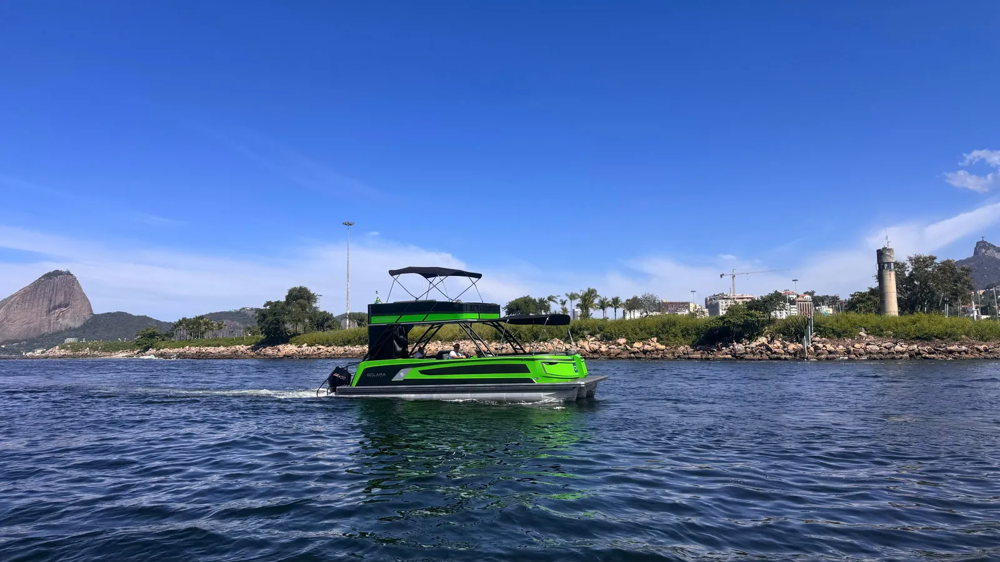

Pontoon 320
Pontoon Solara · T, T-Top e Double Deck
Preço sob consulta

Pontoon de 9,39 m de comprimento e 3 m de largura, com casco trimarã e motor de popa de 150 a 300 hp, também divulgado como Pontoon 300. As versões T e T-Top levam até 23 passageiros mais o piloto, com sofás ao longo de todo o convés. A Double Deck leva até 15 mais o piloto, com toalete fechado, convés superior com geleira e solário, e escorregador até a água.
Ficha técnica
| Versões | T, T-Top e Double Deck |
|---|---|
| Comprimento | 9,39 m |
| Boca máxima | 3,0 m |
| Casco | Trimarã |
| Passageiros | T e T-Top: 23+1 · Double Deck: 15+1 |
| Peso | 1.400 kg |
| Tanque de combustível | 280 L |
| Tanque de água doce | 90 L |
| Motorização | Motor de popa de 150 a 300 hp |
Itens de série em destaque
- Churrasqueira gourmet e balcão de pia completo
- Sofás em courvin náutico
- Mesa em teca
- Toalete com vaso sanitário elétrico
- Som com 6 alto-falantes e subwoofer
- Iluminação interna e externa em LED
- Targa em fibra
- Banco do piloto esportivo giratório
- Entradas USB (3) e porta-copos (8)
Itens opcionais
- Banheiro fixo
- Carregador de bateria com tomada de cais
- Carreta encalhe
- Chopeira com torre, serpentina e gás
- Churrasqueira gourmet americana
- Double Deck
- GPS 7" com sonda
- Kit de instalação do motor
- Placa solar com T-Top
- Targa rebatível
- Teca em EVA
- T-Top
Imagens ilustrativas. As informações podem mudar; confirmar com a Nautica Motors.
Nautica Motors, revendedor autorizado Solara em Belém.